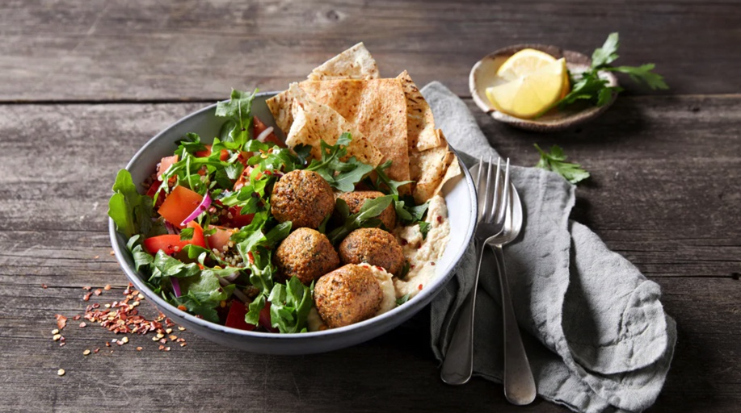

Falafel Bowl

Description
This quick lunch is light, yet filling.
Ingredients
- 3 falafel bites (20g each)
- 1⁄4 cup (1 oz) pre-cooked quinoa cooked according to packet directions
- 1⁄2 small (2 oz) wholewheat pita bread or pocket (or gluten free) cut into triangles
- 1 tbs hummus
Salad
- 1⁄4 lemon juiced
- 1⁄2 tsp olive oil
- 1⁄2 tsp chilli flakes
- salt & pepper, to taste
- 1 cup (1 oz) arugula
- 1 medium tomato diced
- 1⁄4 red onion thinly sliced
- 1 sprig of parsley chopped
Steps
- Cook falafel according to packet directions and set aside.
- In a medium bowl whisk lemon juice, oil, chilli, salt and pepper together. Add remaining salad ingredients and toss.
- Divide salad and quinoa between bowls and top with falafels, pita and hummus to serve.